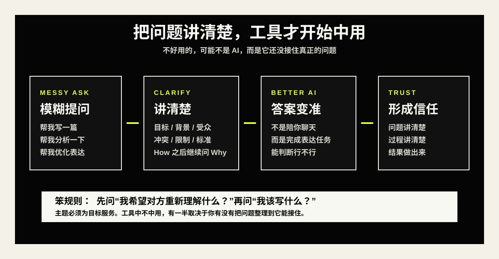

不中用的豆包，在我把问题讲清楚后居然中用了起来
我以前真的觉得豆包不太中用。后来有一次，我把目标、背景、冲突和真正想解决的问题讲清楚，它突然开始中用了。
说实话，我以前有一段时间真的觉得豆包不太中用。
不是那种完全不能用，而是它经常给我一种很微妙的感觉：回答了，但没答到点上；说了很多，但我看完以后还是不知道下一步该干什么。
有时候我甚至会有点不耐烦，心里想着，怎么同样是 AI，别人说 ChatGPT 多强，Claude 多强，为什么我这边一问豆包，就像隔着一层东西。
后来有一次，我把一个问题重新写了一遍。不是简单地补几个关键词，也不是把语气改得更礼貌，而是很认真地把目标、背景、冲突、我真正想解决的地方都写清楚。
结果很奇怪，那个我原本觉得不中用的豆包，突然开始中用了。
它没有突然升级，也没有换一个模型。变的其实是我自己那段问题。
这件事让我有点尴尬，也有点兴奋。尴尬的是，我以前太容易把责任推给工具了；兴奋的是，如果问题真的出在这里，那普通人能训练的东西就变得很具体。
不是玄学，不是某个高级 prompt 模板，也不是一定要用最贵、最强、最顶级的模型，而是先把问题讲清楚。
不好用的，可能不是 AI
我以前问 AI，经常是这种状态：脑子里有一团很模糊的东西，然后直接丢给它。
我会说，帮我写一篇文章，帮我总结一下，帮我分析这个问题，帮我优化一下表达。看上去这些话都没错，AI 也确实会给我答案，但那些答案往往很像一碗温水，什么都有一点，最后什么也没留下。
后来我才发现，这类问题最大的问题，不是“不具体”这么简单，而是我自己还没有分清楚：我到底想让它帮我完成什么？
- 我希望读者看完以后产生什么行为？
- 我现在卡住的是表达方式，还是问题理解？
- 我是在找一个标题，还是在找一个主题？
- 我是在解决表层的 how，还是在追更底层的 why？
比如我说“帮我写一篇关于 AI 的文章”，这个问题其实太空了。AI 当然可以写，它会写出一篇看起来完整的东西，有开头，有观点，有结尾，甚至还有几句像金句的话。
但这篇东西很可能不能发，因为它没有真正接住我当下的困惑。
可如果我换一种说法：我最近发现自己总觉得豆包不中用，但当我把问题按目标、情境、冲突、根因重新描述后，它突然给出了有用答案。我想写一篇公众号文章，让读者意识到 AI 不好用时，先别急着换模型，而是先检查自己有没有把问题讲清楚。
你看，这就不一样了。
前一种问法是在索要一篇文章，后一种问法是在交代一个问题。
把难题写清楚，真的已经解决了一半
我最近越来越喜欢古德林法则那句话：把难题清清楚楚写出来，便已解决一半了。
这句话听起来像一句老生常谈，但真正放到 AI 时代，它反而变得更重要。
因为现在很多人获得答案的速度太快了，快到我们还没理解问题，就已经开始让 AI 解决问题。于是表面上看，我们在高效协作，实际上我们只是把一团混乱更快地外包了出去。

解决问题的前提，是正确理解问题。理解问题的时候，我觉得 5W2H 是一个很朴素但很有用的工具：What，到底发生了什么；Why，根本原因是什么；When，什么时候出现；Where，在哪个场景出现；Who，影响谁；How，它表面上是怎么发生的；How much，它带来的代价有多大。
这里面我最想单独拎出来的是 how 和 why。
很多时候，我们会把 how 当成根本原因。比如“AI 为什么不好用”，表面 how 可能是 prompt 写得不够具体，格式要求不够清晰，语气没有限定。
但更底层的 why 可能是：我自己不知道要什么结果，我没有定义成功标准，我没有把读者、场景和目标说清楚。
技巧是在问题已经成立之后才有用的。如果问题本身就是散的，技巧只会让它散得更精致。
我那次重新问豆包，其实就是做了一次很简单的 5Why。为什么它答得没用？因为答案太泛。为什么答案太泛？因为我的问题太泛。为什么我的问题太泛？因为我没有说清楚目标。
追到这里，问题就变了。
它不再是“豆包为什么不中用”，而是“我怎样才能把一个问题清楚地放到 AI 面前”。这个变化很小，但方向完全不一样。
写文章也是一样，主题必须为目标服务
这件事后来又反过来影响了我对写文章的理解。
以前我很容易从主题开始：今天写 AI，今天写表达，今天写信任，今天写普通人怎么成长。这样想也不是不行，但它太容易变成自我表达。
现在我会先问一个更具体的问题：这篇文章发出去以后，我希望读者产生什么行为？
如果目标是让读者以后用 AI 前先定义交付物，那主题就不能只是“如何写 prompt”；如果目标是让读者意识到表达不是把话说漂亮，而是把问题说清楚，那文章开头就应该从一个真实的卡顿场景开始，而不是一上来抛概念。
这其实就是 SCQA 的价值。先有 situation，让读者进入一个熟悉情境；再有 complication，打破他的安全感；然后提出 question，也就是他真正关心的问题；最后给 answer，把文章的核心观点交出来。
- Situation：大家都在用 AI，也都希望它更懂自己。
- Complication：换模型、学 prompt，答案还是不对。
- Question：问题到底出在 AI，还是出在我们没有把问题描述清楚？
- Answer：当问题被讲清楚，工具才开始真正中用。
它不是为了结构而结构。结构的作用，是让读者先看到生活，再相信观点。
我现在给自己的一个小要求
所以我现在给自己的要求很简单：以后不管是问 AI，还是写文章，还是和别人沟通一个复杂想法，我都先问一句，这个问题我真的讲清楚了吗？
如果是用 AI，我会先写清楚目标、背景、受众、限制、希望的输出和成功标准。不要只说“帮我优化一下”，而是说“我希望这段话让读者产生什么感觉，哪里现在不顺，改完以后应该是什么效果”。
如果是写文章，我会先定目标，再定主题。不是先问“我想写什么”，而是先问“读者看完以后，我希望他重新理解什么”。
如果是解决问题，我会先分清 how 和 why。how 是表面机制，why 才更接近根因。
- 问 AI 前，先写目标、背景、受众、限制、输出和成功标准。
- 写文章前，先定目标，再定主题。
- 解决问题前，先分清 how 和 why。
这件事真正让我有点兴奋的地方在于，它不是一个遥远的能力。普通人每天写一段复盘，问一次 AI，整理一次自己的表达，其实都在练同一件事：把混乱的东西讲清楚。
AI 加了杠杆以后，表达会越来越便宜，答案会越来越多，内容也会越来越像。但也正因为这样，被信任会变得更重要。
别人为什么相信你？不是因为你用了多强的模型，也不是因为你能说一堆听起来很高级的话，而是因为你能把问题讲清楚，把过程讲清楚，把结果做出来。
清楚一点，工具才接得住我。清楚一点，别人也才更愿意相信我。